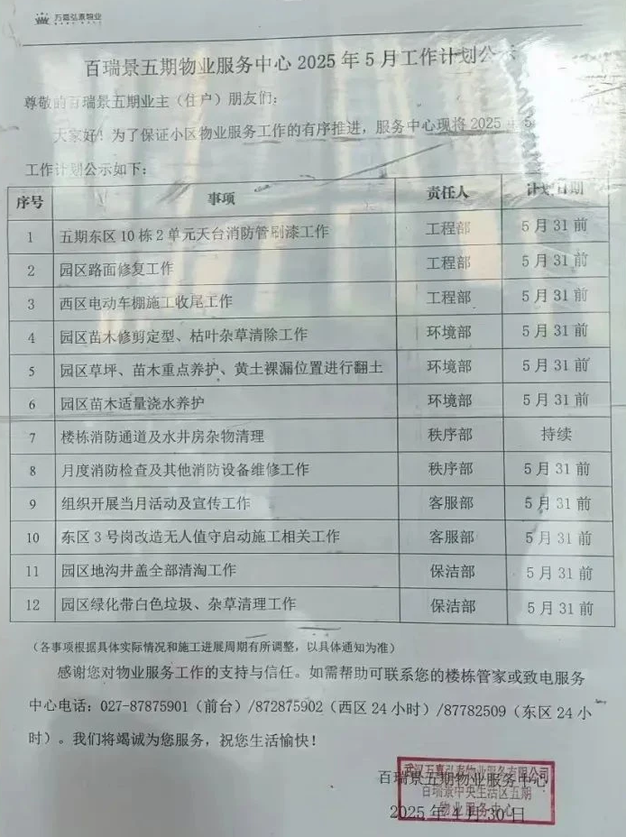

变更历史
| 日期时间 | 类型 | 作者 | 描述 | |
|---|---|---|---|---|
| 2025-05-25 | 增 | Capric | 拍照 | |
| 2025-06-17 | 增 | Capric | 表格版 | |
| 2025-06-21 | 增 | Capric | 表格转换成适配移动端阅读的标题和正文 |
尊敬的百瑞景五期业主（住户）朋友们： 大家好！为了保证小区物业服务工作的有序推进，拟定中心服务 2025 年 5 月工作计划公示如下：
工程部 (5月31日前)
工程部 (5月31日前)
工程部 (5月31日前)
环境部 (5月31日前)
环境部 (5月31日前)
环境部 (5月31日前)
秩序部 (持续)
秩序部 (5月31日前)
客服部 (5月31日前)
客服部 (5月31日前)
保洁部 (5月31日前)
保洁部 (5月31日前)
（各事项根据具体实际情况如施工进度提前将另行通知，以具体通知为准）
感谢您对物业服务工作的支持与信任，如需帮助可联系您的楼栋管家或致电服务中心电话：027-87875901（前台）/ 872875902（西区 24 小时）/ 87782509（东区 24 小时）。我们将竭诚为您服务，祝您生活愉快！
百瑞景五期物业服务有限公司2025年5月10日
